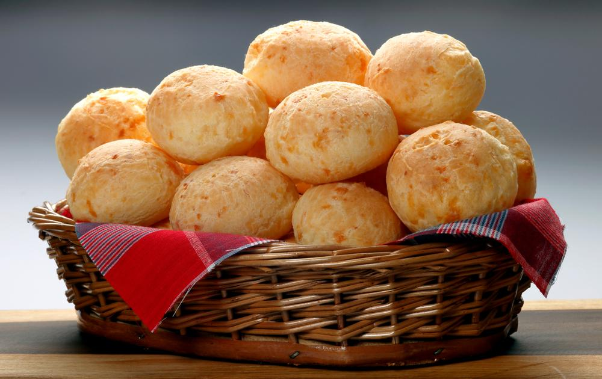

PASTEL DE MILHO

BOLINHO DE AIPIM

EMPADA DE PALMITO

PÃO DE QUEIJO
As sobremesas são mais do que o encerramento de uma refeição; elas são momentos de puro prazer que despertam memórias e emoções. No Espírito Santo e em todo o Brasil, cada doce carrega consigo uma história, uma tradição e uma conexão com a cultura local. São receitas que unem simplicidade e riqueza de sabores, transformando ingredientes como coco, mandioca, frutas tropicais e leite em verdadeiras obras-primas da culinária. Desde o delicado brilho dourado do quindim até a textura macia de um bolo de mandioca recém-assado, as sobremesas encantam pela doçura e autenticidade. Elas são o convite perfeito para uma pausa, para compartilhar sorrisos e criar momentos inesquecíveis ao redor da mesa. Mais do que alimentar, esses doces aquecem o coração e celebram a vida em sua forma mais doce.
PASTEL DE MILHO
BOLINHO DE AIPIM
EMPADA DE PALMITO
PÃO DE QUEIJO